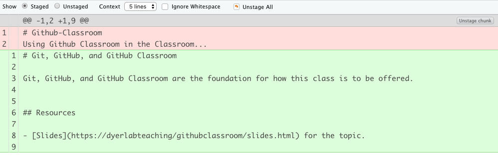
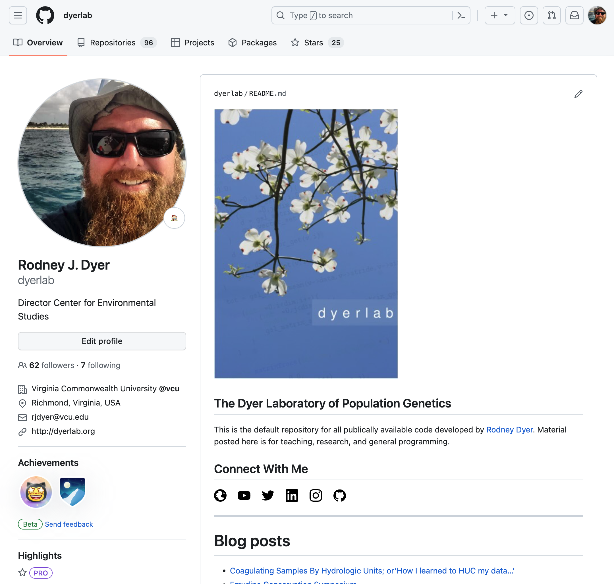
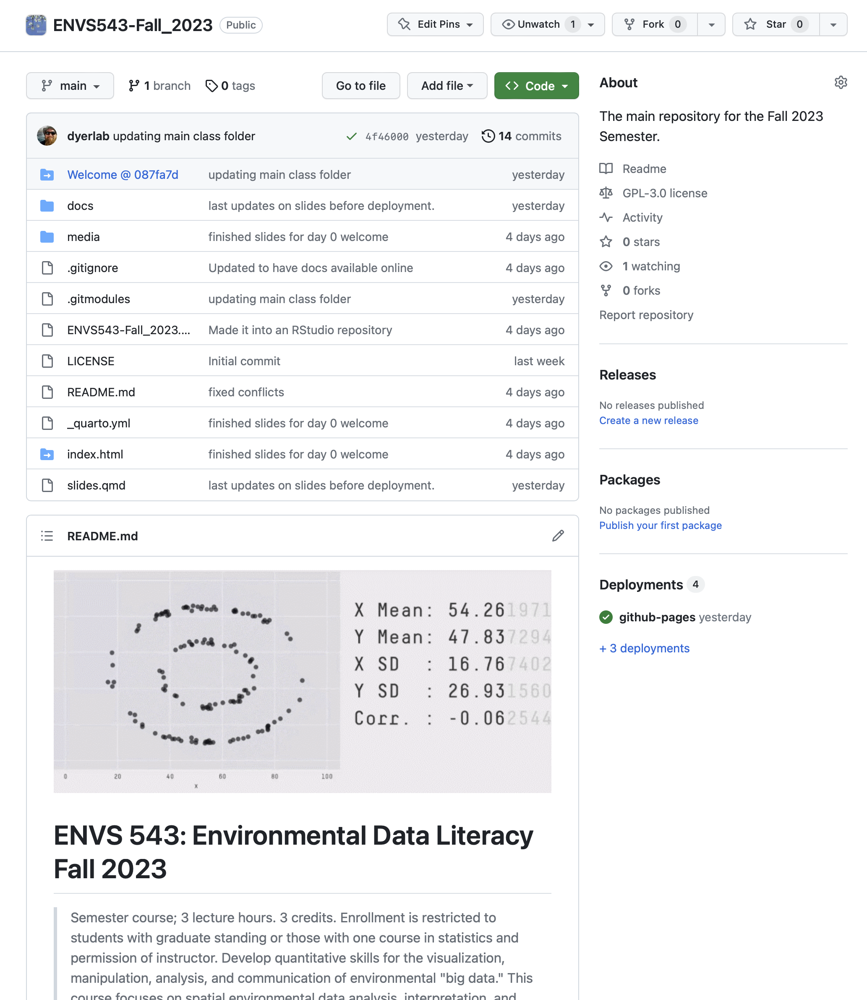
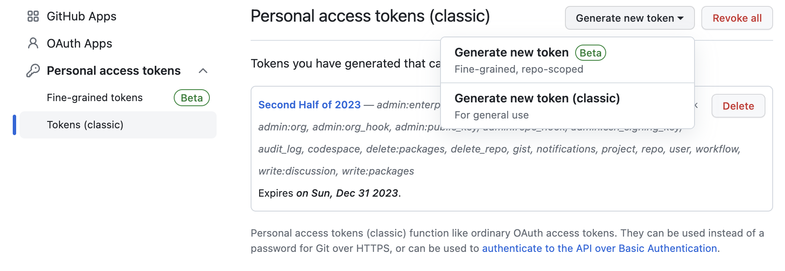
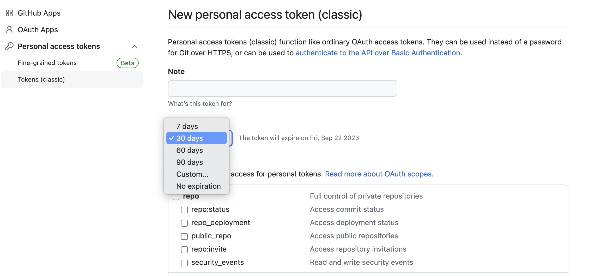
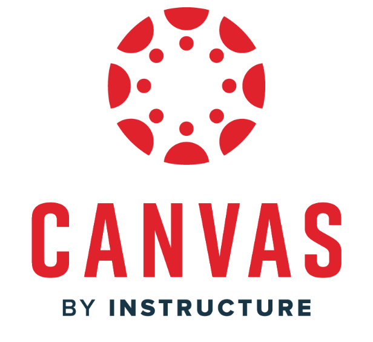

graph LR A[File v1] -->|Edited| B[File v2]
5 Git & GitHub
5.1 Look Familiar?
5.2 What is Git
Git is a distributed versioning system
- Easy for collaboration.
- Easy track entire history of changes in your projects, documents, and code.
- Complete history of all changes.
- Easily revert to previous instances.
- Project Based.
- Branching
5.3 Lifetime of a Document
Consider a single file. After the first edit, you now have two differents ones.
In Google Docs, you can see the version history (and revert) while in Word you can use track changes to see edits but revisions are more complicated…
5.4 Persistence through Diffs
What we do not do is keep multiple versions of the file around as complete files. What is done is that the original document and only the changes made to the file—called diffs—are saved.

5.5 Lifetime of a Document
Add a new figure to the file and now you have three different entities.
graph LR A[File v1] -->|Edited| B[File v2] B -->|New Figure| C[File v3]
5.6 Lifetime of a Document
Perhaps the figure did not work out, and you decided to replace it with an image.
graph LR A[File v1] -->|Edited| B[File v2] B -->|Figure| C[File v3] B -->|Table| D[File v4]
For each new “revision”, you create a separate instance of the file itself.
5.7 Lifetime of a Document
Continue editing and making revisions.
graph LR A[File v1] -->|Edited| B[File v2] B -->|Figure| C[File v3] B -->|Table| D[File v4] D -->|Edited| E[File v5]
5.8 Lifetime of a Document
Eventually, you finish making revisions to the file.
graph LR A[File v1] -->|Edited| B[File v2] B -->|Figure| C[File v3] B -->|Table| D[File v4] D -->|Edited| E[File v5] E -->|Submitted| F[Thesis!]
Git allows you to have access to the entire history of the file and can revert to any of the previous version you want to.
5.9 Lifetime of a Document
Not all documents are incremental. Submitting for publication requires a different layout, citation format, etc. than for your thesis. Both of these are derived from File v5 as different branches.
graph LR A[File v1] -->|Edited| B[File v2] B -->|Figure| C[File v3] B -->|Table| D[File v4] D -->|Edited| E[File v5] E -->|Submitted| F[Thesis!] E -->|Submitted| G[Publication]
5.10 Git in Projects
This is a process that can include hundreds of files, data sets, images, shapefiles, etc. It is a Project Based approach.
And the entire project is referred to as a Repository.
5.11 Remote Locations
A git repository can live in many places.
- On your laptop
- On the lab computer
- On a thumb drive (please do not use these any more)
- On your home computer
- On you iPhone
5.12 Synchronizing Repositories
Having a single remote Repository allows you to keep all the remote repositories in sync.
- Establish Repository on GitHub.
- Clone that repository to your local computer.
- Make changes.
- Commit changes when you are at a logical stoping point.
- PUSH the one or more committed changes to GitHub.
- On other computers with local copies, you PULL changes from GitHub to retrieve any changes you’ve made.
5.13 Pulling & Pushing.
For all these computers, you need to make sure you are pushing changes to GitHub from your current machine so that when you get to the next computer you can pull down these changes.
5.14 Collaborations
With a GitHub repository, several people can contribute to the same project and have access to the same content.
- Can lead to conflicts
- Merging files
5.15
5.16 The Profile Page

5.17 Github Repositories
- history
- files
- description
- settings
- visibility
- access

5.18 Access Controls
GitHub has a fine granularity of control over who can access content and how much access they can have.
5.19 User Names & Passwords
If you are not using a password manager, PLEASE START TODAY.
- 1Password
- LastPass
- mCrypt
5.20 Personal Access Tokens
Settings \(\to\) Developer Settings \(\to\) Personal Access Tokens

5.21 Scoped Tokens

Select custom length and allow for enough time to not be a problem. Save long token securely.
5.22 Creating a Repository
From your profile page, select the Repositories menu and follow the instructions.
- Names & Descriptions.
- Private vs Public.
- The README.md file as your ‘front page’.
- The .gitignore file.
- Licenses.
- Websites.
5.23
5.24 Online Editing
The repository interface allows:
- Adding and deleting of files.
- Editing file content.
- Deploying to websites.
- Wiki/Comments/Feedback.
5.25 Going Forward


5.26 Questions

Return to course table of contents.